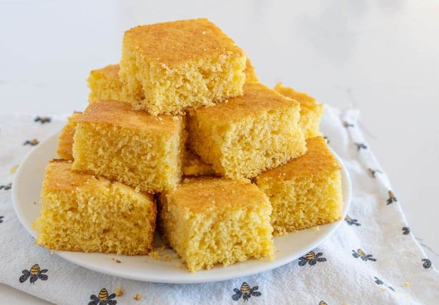

Southern Skillet Cornbread

Description:
Dive into the heart of Southern cuisine with this classic skillet cornbread recipe. Using the richness of bacon drippings, this dish captures the authentic essence of the South. With minimal prep, it's a breeze to make, blending a delightful mix of buttermilk and eggs. Once the batter hits the hot skillet, it transforms into a golden masterpiece. Serve it warm and watch as butter seamlessly melds into its fluffy layers. Whether accompanying barbecues, stews, or standing tall on its own, this cornbread is a true Southern gem.
Ingredients:
- 1/4 cup bacon drippings
- 2 cups self-rising cornmeal mix
- 1/2 tsp. baking soda
- 2 large eggs, lightly beaten
- 1 1/2 cups buttermilk
- Butter (for serving)
Steps:
- Preheat Skillet: Preheat your oven to 425°F. In a 9-inch cast-iron skillet, place the bacon drippings and heat them in the oven for about 5 minutes.
- Mix Dry Ingredients: In a mixing bowl, combine the self-rising cornmeal mix and baking soda. Create a well in the center of the mixture.
- Prepare Wet Mixture: In another bowl, stir together the lightly beaten eggs and buttermilk.
- Combine Mixtures: Add the wet mixture to the dry ingredients. Stir just until everything is moistened.
- Add Hot Drippings: Using oven mitts, remove the hot skillet from the oven. Tilt the skillet in all directions to ensure the bottom is coated with the bacon drippings. Pour the hot drippings into the batter. Whisk everything together until blended.
- Pour Batter: Pour the combined batter back into the hot skillet.
- Bake: Place the skillet in the preheated oven and bake for approximately 27 minutes or until the cornbread is golden brown.
- Serve: Once baked, invert the cornbread onto a serving plate. Cut it into wedges and serve hot with butter.
Back